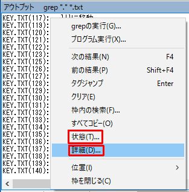

秀丸エディタ Ver.8.00以降では、「アウトプット枠」が使用できます。(Windows 98/Meでは使用できません)
「アウトプット枠」には、「grep」の結果や、「プログラム実行」の結果を表示する事が出来ます。
「アウトプット枠」を表示するにはメニューの「表示」から「アウトプット枠」にチェックを入れます。
「アウトプット枠」を使うには、「grep」や「プログラム実行」を行います。
grepを実行し、結果をアウトプット枠に出力します。
普通にgrepを実行して、「出力先」を「アウトプット枠」に設定します。
この状態で「OK」を押すと、エディタウィンドウの下に「アウトプット枠」が表示され、grep結果が出力されます。
「アウトプット枠」にある、grep結果をダブルクリックすると、そこにタグジャンプします。また、「アウトプット枠」内のカーソルを操作し、タグジャンプしたい箇所で「Enter」を押しても同様にタグジャンプします。
「プログラム実行」で結果をアウトプット枠に出力します。
今回はコマンドプロンプト(cmd.exe)の内部コマンドである dirコマンドを使用します。
cmd.exe /c dir を入力。
コンパイル等を実行しエラーだった場合、出力形式が秀丸エディタで認識できる形式なら、 grepと同様にダブルクリック・カーソルを合わせての「Enter」で、エラー発生箇所にタグジャンプできます。
「アウトライン枠」内の右クリックメニューから、アウトプット枠の設定が可能です。

「詳細」を選ぶと、「アウトライン枠」の設定が表示されます。
表示位置と、「アウトライン枠」内のフォントと色の設定(文字色/背景色)できます。

「状態」を選ぶと、「アウトライン枠」のカレントパス設定が可能です。この設定は「タグジャンプ」に影響があります。grep結果で、フルパスで出力していない場合は、このパスと表示内容をフルパスと認識します。

「アウトプット枠」からの「タグジャンプ」ですが、秀丸のウィンドウモードによって動作が変わります。
「タブモード」の場合は、新しいタブが開きそこのタグジャンプします。「非タブモード」の場合は、アウトプット枠が表示されている秀丸ウィンドウを使用してファイルを開こうとするため、編集中などの場合は「ファイルの保存」ダイアログが表示されます。